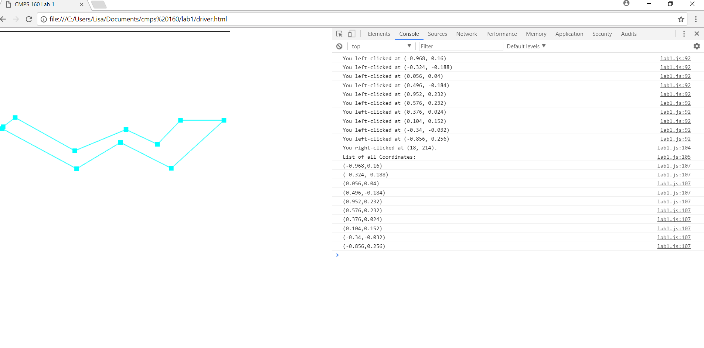

Create a blank (white) canvas at least 500 x 500 in dimension.
Recognize left and right mouse clicks. Echo the mouse positions for each mouse click (use console.log).
Maintain a list of points representing positions of mouse clicks (both left and right).
Draw lines between pairs of points.
Draw rubberband line between the last point and the current mouse position.
Print out sequence of mouse click positions when a polyline is complete (when right-click of mouse is detected). Note that it's possile to draw multiple polylines. For this assignment, only one poyline is required.
After the right mouse button is clicked, it is still possible to move around a line from the last pressed point, but the user cannot make any further permanent points/lines.
Move mouse around canvas and left-click to draw a point. Move the mouse again to decide where to place a rubberband line on the next left mouse click. In the console, view the coordinates of each mouse press. On a right click, the polyline will be complete and the user can view a list of all coordinates pressed in the console.
I attempted to include the code from the text book to change the color of the clicked points depending on the quadrant, but there were errors with gl.uniform4f(...) so I was unable to successfully add this feature.
